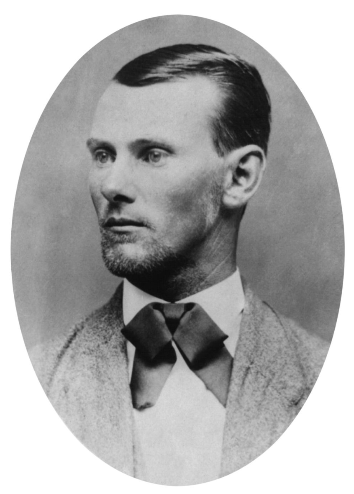
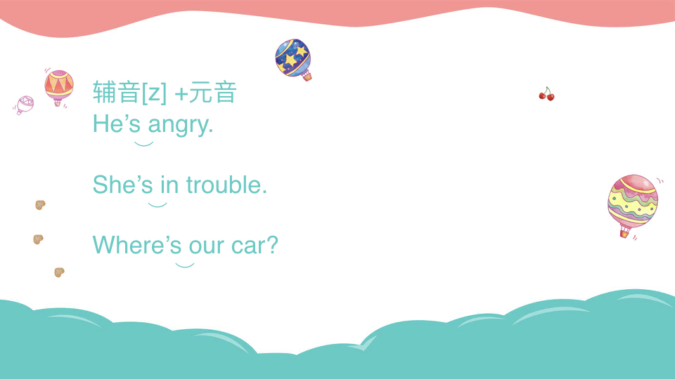
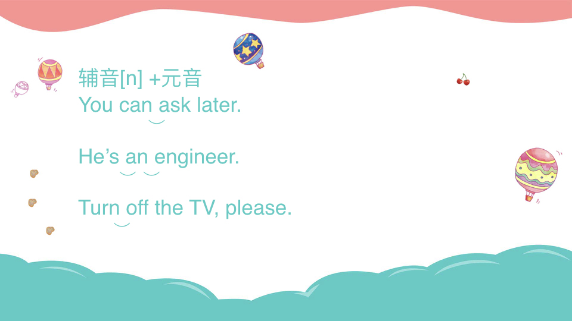
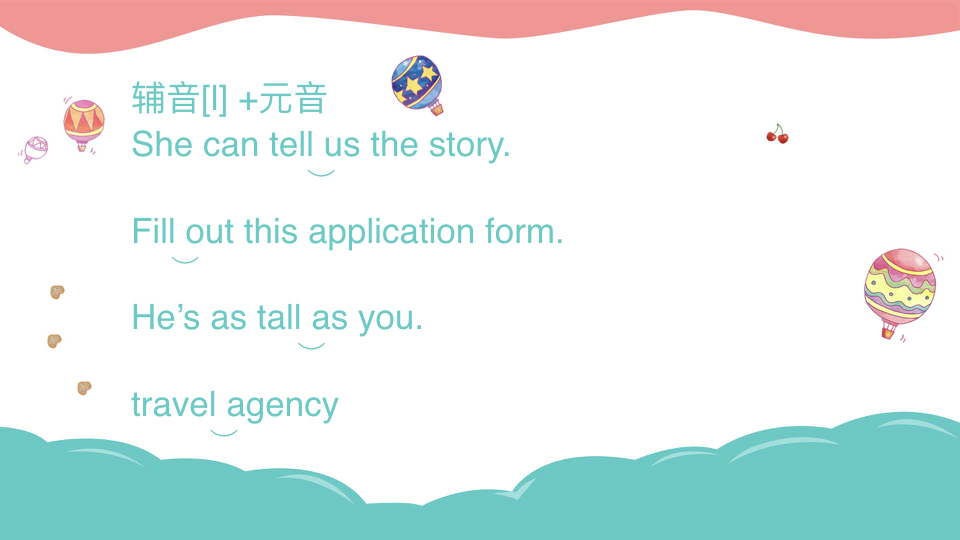
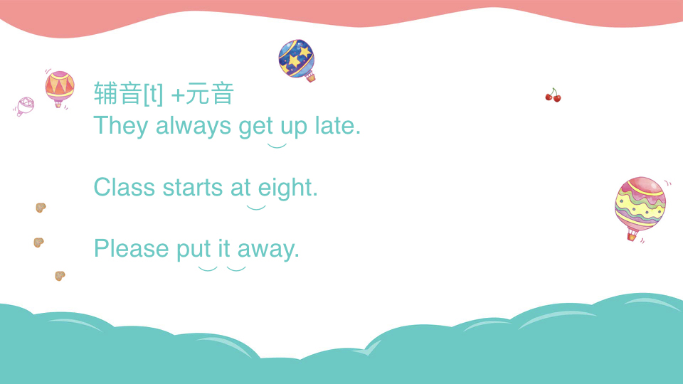

chapter19.1--handout
Background Information
Jesse James（杰西·詹姆斯）

杰西·伍德森·詹姆斯（Jesse Woodson James，1847年9月5日－1882年4月3日），出生于美国密苏里州，美国侠盗，是詹氏-杨格团伙最有名的成员，人称西部第一快枪手，年轻时曾缔造数次打劫戒备森严的大银行，更曾多次在险境中出生入死，是西部大名鼎鼎的侠盗英雄。
关于他的死亡众说纷纭，有人说是被下属背叛、有人说是一场为了躲避法律制裁精心策划的阴谋，后面还有改编成电影：Brad Pitt主演的《神枪手之死》（The Assassination of Jesse James by the Coward Robert Ford），就是改编自Jesse的故事。
Godfather（教父）
教父意思指在婴儿或幼儿受洗礼时，赐以教名，并保证承担其宗教教育的人。天主教、东正教以及一些新教宗派(圣公会等)行洗礼时为受洗者设置的男性监护人和保护人。
在黑帮中Godfather一般是说某党派的大佬，相信看过《教父》的同学都对马龙白兰度刻画的黑手党（Maffia）首领印象深刻的哈～
mortgages(按揭)
“按揭”一词是英文“Mortgage”的粤语音译，最初起源于西方国家，本意属于英美平衡法体系中的一种法律关系，后于20世纪90年代从香港引入内地房地产市场，先由深圳建设银行在当地试行，之后逐渐在内地流行起来，因为在房地产领域频频出现并正式运用于文本，其含义逐渐演化成了“抵押贷款”，目前在国内已经被正式称为“个人购置商品房抵押贷款”。
mortgage在很多时候都会用到，最典型的是买房子的按揭，这部分的话需要先预付down payment，可以理解为定金，也就是首付一样的意思，付完down payment，之后mortgage的部分就是每个月还款啦～不然会遭到今天文章中汽车公司催款一样的事情哦～
Vocabulary
estimation
💧calculation, computation
n. 估计, 评价, 判断
We must be realistic in our self-estimation, neither being conceited nor belittling ourselves.
我们对自己的估计应该实事求是， 不要自高自大， 也不要妄自菲薄。
interlude
💧n. (戏剧、电影等的)中间休息, 幕间休息，也就是说过场
A study shows that many people find such interludes incredibly unpleasant.
有研究显示：许多人对如此小憩感到非常不愉快。
💧某事过程中发生的事件或片段
Being ill when you are a child or growing up is such an enchanted interlude!
当你是个小孩或正在成长时，生一场病是这样一个迷人的插曲！
intimate
一般我们都知道这个意思：
💧adj. marked by close acquaintance, association, or familiarity
亲密的；私人的；精通的
An intimate friendship grew up between them.
他们之间渐渐产生了亲密的友情。
不过今天的文章中，表达的意思不尽相同：
💧imply as a possibility
vt. 暗示；通知；宣布
He intimated to do this work.
他暗示他将做这项工作。
infallible
💧adj. knowing truth with certainty.
不会犯错误的, 无过失的，极精确的，万无一失的;永远有效的
💧infallible results of war
战争的必然结果
infallible indication:可靠的迹象
infallible experience:确实可靠的经验
infallible way:万全之策
chisel
💧vt. engage in deceitful behavior; practice trickery or fraud
欺骗；
💧carve with a chisel
凿；雕，刻
chisel the marble雕刻大理石
Crush Your Problems
- I was reared / on the edge of the Jesse James country / out in Missouri.
💧这个句子中的几个小词是不是有点懵？rear之前我们说过rear表示后面，比如后视镜rearview，希区柯克的《后窗》Rear Window
💧但是这里的rear表示抚养，猜到了吗？比如：
She had reared a large family.
被动的就可以用来替换：I was born in China. /I was raised in China.
所以这句话，简而言之就是说，我是在Jesse James在密苏里州的那个村儿附近被拉扯大的。
- And here's the cream of the whole thing: we delivered new cars to all six of these customers within the next two years!
💧the cream of...感觉好好吃的样子，其实表示的是精英、精华之类的意思，就好像你吃蛋糕的时候，哪个部分最吸引你呢？不怕胖的当然是甜美柔软入口即化的奶油啦～
那么这个套路我们可以怎么套路到你们的四六级考研托福雅思里呢？咳咳，看这里：
💧Financing business has gobbled up the cream of Britain's university graduates and led to huge inequalities of income and wealth.
金融行业尽数吸纳了英国大学精英毕业生，并且导致了收入和财富上的严重不均。
💧As you all know, you've all been hand-picked by senior staff management to participate, and from your performance reviews, I know you're the cream of the crop.
大家都知道，你们是由高级管理人员亲自挑选出来参加会议的，从你们的业绩评议来看，我知道你们都是精英。
知道怎么用了吗？老师又想到一个表白金句给大家分享：
You are the butter to my bread, and the breath to my life.
你是我面包上的黄油，也是我命中的呼吸。
来自Julia Child的话，讲英文的吃货还是大多数的，表示珍贵、精华的东西，都可以用cream啊，butter啊什么的来表示，还有被人套路惯了的“You are the apple of my eyes"也是同类替换啦～
- To put it differently and perhaps more clearly, people are honest and want to discharge their obligations.
💧To put it differently...换言之，也就是等于大家总爱用的，in another word, on the other hand, that is to say...之类。可以用在解释说明自己提出的概念、观点的时候，(to put it differently, 当你说了一句比较难懂，或者容易产生混淆的话的时候。）
💧People can hardly benifit from what they previously fail of. To put it differently, it is very hard to learn from very big mistakes. 换句话说，从重大的错误中学习是很难的。
💧Confucius once claimed: " what you do not want done to yourself, do not do to others(己所不欲，勿施于人)“， to put it differently, don't force others to accept your dislikes.
Content Analysis
今天的内容中，卡叔提到了Jesse James这个“侠盗”的故事，和之前我们学到过的"Two Gun" Crowley, Al Capone之流一样，Jesse James认为自己的动机是好、单纯的，鲁迅叔叔说他向来不惮以最坏的恶意揣测中国人”，但是在卡叔看来，对于现在的我们，都有一颗理想主义的心的我们，大家都会相信更好的动机。所以如果你想要去改变别人，影响别人，要表现出来更高尚的动机。（But all of us, being idealists at heart, like to think of motives that sound good. So, in order to change people, appeal to the nobler motives.）
卡叔举到了JP Morgan的话来论证，之后又提到了James L. Thomas的例子，来说明自己的观点：
一般人催分期的用户还款的时候，都会摆出一副自己绝对正确，对方绝对错误的架子（They made it very plain that the company was absolutely and unconditionally right; therefore he, the customer, was absolutely and unconditionally wrong.）
而Thomas的做法不同，他采用了5个步骤，最终获取了很好的回报：
- My visit to each customer was likewise to collect a bill long past due - a bill that we knew was absolutely right. But I didn't say a word about that. I explained I had called to find out what it was the company had done, or failed to do.
绝口不提欠钱的生气，只是试探对方觉得公司做的哪里不足 - I made it clear that, until I had heard the customer's story, I had no opinion to offer. I told him the company made no claims to being infallible.
在搞清楚用户的故事之前不做任何评价，不把公司摆在绝对权威的立场上。 - I told him I was interested only in his car, and that he knew more about his car than anyone else in the world; that he was the authority on the subject.
宣誓主权，强调用户是自己财产真正的主人。 - I let him talk, and I listened to him with all the interest and sympathy that he wanted - and had expected.
将话筒递给对方，让对方说出自己的想法，自己则做一个好的倾听者。 - Finally, when the customer was in a reasonable mood, I put the whole thing up to his sense of fair play. I appealed to the nobler motives.
最后，平复了客户的情绪之后，表现出来自己更高级的动机。
通过这样的方式，Thomas最终达到了自己的目标。所以卡叔再次说明了自己的观点，表现出自己良好的动机/更高级的动机，可以更好的去改变别人的想法。
Today's Bonus
好久不学术，今天来给小伙伴们发个大招，大家有没有听我们的原文录音时候发现，我们的外教录音师的语调变化很丰富，抑扬顿挫？其实，和中文的平上去入声调一样，英文也具备自己的声调（Intonation），而且，最能够干扰到大家判断的，其实还是连读的地方（就像一个满嘴京片子的小哥哥和你讲装垫儿台的时候一样的一脸懵逼），下面给大家分享连读的分类总结，给你一份practically，substantially，extremely，considerably useful methods of practicing your pronunciation！
Linking of Sounds 连读现象
所谓连读，指得是词与词之间交界的两个音会经常连在一起，发音时好像连成了一个较长的单词。连读有助于完整意义的表达，并使整句话具有强烈的粘着感，体现句子的整体性，充分体现美语语言的自然流畅。
- “辅音+元音”式：即前一个单词结尾的辅音与后一个单词开头的元音相连读。



 - “辅音+辅音”式：即当前一个单词的结尾辅音与后一个单词的开头辅音相同时，不用再发音两次，而是合并成一个音，同时发音延长，语音学上又称之为“叠合现象”。
bad dog d+d
like candy k+k
big girl g+g - “元音+元音”式：即两个元音有时也可以相连，此时是由一个元音向另一个元音滑动的过程，中间不能停顿，必须一气呵成。
1）如果前一个单词的结尾元音是[І][e][aІ][ɔІ]，那么在和后面元音相连的时候加入滑动半元音[j]；
2）如果前一个单词的结尾元音是[ʊ][u][ǝu][аʊ] 的时候，与后面元音相连的时候加入滑动半元音[w]。
1）be on time 准时
[bІjɔn ′taІm]
stay up 熬夜
[stej′ǝp]
2）flow out 流出
[flǝu ′w аʊt]
grow up 长大
[grǝu ′w ǝp]
Coincidence
smart word
今天感触最深的是卡叔说：
The fact is that all people you meet have a high regard for themselves and like to be fine and unselfish in their own estimation.
细思一下确实，我们自己的形象或许真的在自我肯定的想象当中变得更美好。